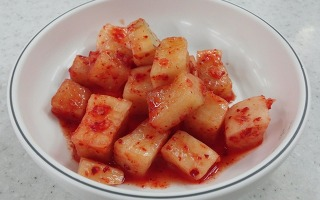
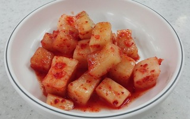

달고나이모
일러스트레이터
촌스럽지만 따뜻한 그림을 그려요 매일 그리는 달고나이모입니다.♡
드로잉
그림
···


 찬바람이 불면 털게를 쪄야지
by여훈느
찬바람이 불면 털게를 쪄야지
by여훈느
 할머니가 되서도 데님을 입고싶다.
꼭 필요한 옷 하나를 고를라고 하면 0.1초의 망설입도 없이 무조건...
by수지
할머니가 되서도 데님을 입고싶다.
꼭 필요한 옷 하나를 고를라고 하면 0.1초의 망설입도 없이 무조건...
by수지
 목이 늘어난 반팔티는 언제 버리는게 좋을끼
나는 정리를 좋아한다. 그리고 잘한다. 몇 가지 예시를 들자면...
by다정
다시 엄마의 도시락을 먹을 수 있을까
엄마, 이제 도시락 안 싸주셔도 되요. 결혼 애기가 오갈 때쯤이었던 것...
by병탄유리
목이 늘어난 반팔티는 언제 버리는게 좋을끼
나는 정리를 좋아한다. 그리고 잘한다. 몇 가지 예시를 들자면...
by다정
다시 엄마의 도시락을 먹을 수 있을까
엄마, 이제 도시락 안 싸주셔도 되요. 결혼 애기가 오갈 때쯤이었던 것...
by병탄유리
 강릉에서의 좋은날
by선아키
강릉에서의 좋은날
by선아키
 사람을 쫒아내는 집, 불러들이는 집
나의 첫 주택 작업이였던 부산 해운대 '관해현'의 건축주가 새...
by김정관
사람을 쫒아내는 집, 불러들이는 집
나의 첫 주택 작업이였던 부산 해운대 '관해현'의 건축주가 새...
by김정관
 갑자기 고양이가 5마리
by Blair
출산 하루 전날, 펑펑 울었다.
by성의
갑자기 고양이가 5마리
by Blair
출산 하루 전날, 펑펑 울었다.
by성의
 나는 다시 뚱뚱한 여자가 되었다.
밤 11시 서울역 앞에는 호객행위를 하는 택시기사 무리가 정류장 앞...
by수지
나는 다시 뚱뚱한 여자가 되었다.
밤 11시 서울역 앞에는 호객행위를 하는 택시기사 무리가 정류장 앞...
by수지
 "편의점에서 컵라면 먹고 올게"이 말에 꽂혔다.
아이를 독립적인 인격체로 인정하게된 날을 기억한다.(물론 아이는 태어..)
by조G
"편의점에서 컵라면 먹고 올게"이 말에 꽂혔다.
아이를 독립적인 인격체로 인정하게된 날을 기억한다.(물론 아이는 태어..)
by조G
 아이의 고백은 늘 돌직구다.
잘 먹던 2호가 갑자기 밥을 안먹더니 결국 탈이 나이 나타나서..
by엄마코끼리
아이의 고백은 늘 돌직구다.
잘 먹던 2호가 갑자기 밥을 안먹더니 결국 탈이 나이 나타나서..
by엄마코끼리
 김장의 헤게모니는 계속될 것인가?
11월 또 다시 김장시즌이 됐다.예전에는 친정집에 온가족이 모...
by소안키친
김장의 헤게모니는 계속될 것인가?
11월 또 다시 김장시즌이 됐다.예전에는 친정집에 온가족이 모...
by소안키친
 소장이 20%만 남았습니다.
"소장이 20%만 남았습니다" 건전지나 밧데리의 전력이 20%..
by외과의사 닥터오
어묵?오뎅? 겨울에 '꼬치'면 됐지 뭐
◼︎ 이우석의 푸드로지 - 어묵생선 갈아낸후 빚어 튀진 음식강점기에...
by이우석 더 프리면
소장이 20%만 남았습니다.
"소장이 20%만 남았습니다" 건전지나 밧데리의 전력이 20%..
by외과의사 닥터오
어묵?오뎅? 겨울에 '꼬치'면 됐지 뭐
◼︎ 이우석의 푸드로지 - 어묵생선 갈아낸후 빚어 튀진 음식강점기에...
by이우석 더 프리면
 기분파 부부가 비엔나에 가면 생기는 일
by조수필
기분파 부부가 비엔나에 가면 생기는 일
by조수필
 고층살이에 대하여
나는 아파트 20층에 살고있다. 고층 빌딩에서 일해 본 경험은..
by사다인
앞으로는 절대로 누구에게도 돈을 빌려주지 않을..
매 달 카드값과 월세에 치여 사는 평범한 소시민이라, 돈 빌려 달...
by푸린
고층살이에 대하여
나는 아파트 20층에 살고있다. 고층 빌딩에서 일해 본 경험은..
by사다인
앞으로는 절대로 누구에게도 돈을 빌려주지 않을..
매 달 카드값과 월세에 치여 사는 평범한 소시민이라, 돈 빌려 달...
by푸린
 10년 차 전원주택 생활자
by장수생
10년 차 전원주택 생활자
by장수생
 진상중에 진상은 진상 학부모
앞선 브런치에도 적었는 난 아르바이트로 학교와 겸하게 다니..
by몽접
진상중에 진상은 진상 학부모
앞선 브런치에도 적었는 난 아르바이트로 학교와 겸하게 다니..
by몽접
 카카오 송금으로 부조를 한다고?
by고든

나는 깍두기
by늦봄
카카오 송금으로 부조를 한다고?
by고든

나는 깍두기
by늦봄
 댁에 불이 난 것 같습니다.
by고든
댁에 불이 난 것 같습니다.
by고든
키워드로 분류된 다양한 글 모음
브런치 추천 작가
 Luna
프리랜서 일러스트레이터
@hotcat_luna
Luna
프리랜서 일러스트레이터
@hotcat_luna
 THE PARI
일러스트레이터
프리랜서 일러스트레이터, 브랜드디자이너 THE PARI의 브런치입니다. 작업문의는
goldpe21@naver.com
THE PARI
일러스트레이터
프리랜서 일러스트레이터, 브랜드디자이너 THE PARI의 브런치입니다. 작업문의는
goldpe21@naver.com
 강인춘
한국무지개일러스트회 일러스트레이터
남녀가 만나 부부라는 이름으로 서로의 몸에 동아줄 칭칭 감고 사는 게 때로는 사랑이고 행복일 때가 있다. 그러다 언제가는
지겨워 묶인 동
강인춘
한국무지개일러스트회 일러스트레이터
남녀가 만나 부부라는 이름으로 서로의 몸에 동아줄 칭칭 감고 사는 게 때로는 사랑이고 행복일 때가 있다. 그러다 언제가는
지겨워 묶인 동
 류승희
만화가
조금 느리지만 사각사각 긋는 느낌이 좋아 연필로 만화로 그립니다. <그녀들의 방>,<오늘도 잘
살았습니다.>,어린이 만화 <나리나리고나리>
류승희
만화가
조금 느리지만 사각사각 긋는 느낌이 좋아 연필로 만화로 그립니다. <그녀들의 방>,<오늘도 잘
살았습니다.>,어린이 만화 <나리나리고나리>
 anego emi
에세이스트
남은 생은 글쓰고 그림그려요
anego emi
에세이스트
남은 생은 글쓰고 그림그려요

브런치의 다양한 글을 만나보세요.
밥타령을 그리 하는 편이 아니다. 한 끼 정도는 수시로 건너뛰고, 주전부리로 때우거나 맥주 한 캔으로 대신할 때도 많았다. 요즘처럼 세끼 꼬박 따신 밥을 챙겨 먹었던 적이 언제였었나싶다. 그것도 엄마가 해주는 엄마 밥을. 잠시 한국에 와서 건강 검진도 받고 온 김에 이런저런 일도 보고 있다. 친정에서 지내는 동안 엄마는 부지런히 내 식사를 차리셨다.
by리라산책
# 동생 오기 by 3주 전 미국에 살고 있는 동생은 휴가를 오기 전부터 엄마에게 집을 치워 놓으라고 신신당부를 했다. 정리 유전자가 없는 엄마는 알겠다 대답하고, 나름 매일 10리터짜리 쓰레기 봉투 하나씩을 꽉꽉 채워 내놓았다. 하지만 수십년간 쌓아온 집안 곳곳의 쓰레기를 다 내보내기엔 역부족이었다. 그러다가 엄마집에 일이 있어 갔더니 그 사이 당근마켓의
by산치’ 얼마 전 노량진수산물도매시장 새벽시장을 다녀왔다. 새벽 4시가 조금 넘은 시간 이미 경매가 한창이었고 낙찰된 어류는 바로 옆 도매시장에서 날개돋인 듯 팔렸다. 식재료를 준비하는 식당 주인, 싸게 횟감을 사려는 일반인들로 새벽 도매시장은 생동감 있게 북적였다. 겨울로 가는 길목인 가을엔 유난히 바다생물 맛이 좋을 때다. 다양한 종류가 나올뿐더러 선도도 좋
by유성호의 맛있는 동네 산책내가 현재 살고 있는 우리 집 동네, 코펜하겐에 있는 뇌레브로(Nørrebro)가 최근 글로벌 매체 '타임 아웃(Time Out)'지에서 '2021 세계에서 가장 멋진 동네'로 선정되었다. 타임아웃지는 전 세계 27,000명의 시민과 현지 전문가들을 대상으로 설문조사를 진행해 음식, 문화, 밤 문화, 공동체 정신, 지속가능성 등을 검토하여 순위를 정했다고
byannamood살이 쪘다 먹는 입을 때려야 할까? 아님 자제하지 못한 이성을 탓하며 머리를 쥐어박아야 할까? 배고픈 소크라테스가 될 생각은 없었지만 그렇다고 배부른 돼지가 되기는 더욱 싫었는데 자꾸만 나 자신이 배부른 돼지가 되고 있음을 느낀다. 몸의 변화를 몰랐을 때는 남편이 날보고 '먹는 욕심이 많은 사람'이라고 놀려도 웃을 수 있었다. 본인은 나보다 더 먹는 사람이
by 조선여인내가 생각하는 늦깎이 공무원의 나이는 40대 이상이다. 마흔이 넘어보니 30대는 청춘으로 느껴져 앞에 3자 붙은 나이는 제외하기로 했다. 일단 지방직, 국가직 공무원 시험이 끝난 후 기사를 보면 연령별 통계가 꼭 나와 있다. 기사만 봐도 40대 이상의 합격자 수는 증가하고 있다. 사이버고시센터에서 제공하는 통계자료를 통해 최근 3년간 늦깎이 국가직 공무원
by은반지홀연히 안개를 뚫고 온 고양이들이 태연하게 냥독대에 앉아서 자작나무 잎 지는 소리를 듣는다. 가을 깊은 산중에 이따금 새가 날아들고, 단풍은 절정도 없이 가만히 물들었다.
by이용한사람 사이에는 이해관계가 존재한다. 직장 안에서는 각자의 역할과 성과를 위해 이해를 따지고, 거래처는 한 푼이라도 더 이익을 내기 위해 따지고, 대인 관계에서는 이득이 될 것 같은 사람 위주로 만나려고 한다. 나부터도 도움이 되는 사람을 우선순위에 두게 되니 말이다. 아마 어릴 때는 이런 이해를 따지는 게 덜 했지 싶다. 친구끼리는 아무런 조건 없이도 내
by김형준집에 돌아가려고 짐을 싸던 중이었다. 1박 2일을 머물다 와도 가족이 움직이면 소소한 짐을 쌌다 푸는 게 일이다. 거의 20년에 이르니 예전처럼 오래 걸리진 않는다. 다만 시댁에서 집에 돌아갈 때는 신경이 쓰인다. 아이들 어릴 때 옆에서 칭얼대는 애들 때문에 정신이 없어서 칫솔이니, 장난감이니 사소한 물건을 두고 오면 시어머니는 꼭 "얘, 너 또 물건 두고
by 은수
방을 구한 후, 텅 빈 방을 어떻게든 내가 살 곳으로 만들어보려고 얼마나 인터넷에서 주문을 해대고, 중고 가게와 중고 물품 거래 사이트를 들락날락 거렸는지 모른다. 포크, 칼부터 접시, 쟁반, 카페트까지 바리바리 사 날랐다. 그렇게 매트리스와 베개까지 오고, 한숨 돌리자마자그 다음날부터 본격적으로 아프기 시작했다. 구내염이 생기기 시작하더니 본격적으로 편
by 백마띠 소녀"나는 믹스커피 마시려고 아침밥 먹는다. 밥은 먹기 싫어도 믹스커피는 먹고 싶어." 엄마의 무한한 사랑을 받고 있는 주인공은 믹스커피이다. 달달한 맛은 엄마의 모든 시름과 화병을 녹여주는 강력한 힘을 가지고 있다. 하긴 나도 카페라테를 마시려고 아침밥을 먹으니 엄마와 나는 꽤 닮았다. 예전에 스타벅스에서 여고생들의 대화를 들은 적이 있다. 아메리카노를 마
by인어수인김밥을 좋아한다. 조금 많이 좋아한다. 그렇다고 치킨이나 햄버거만큼 좋아하지는 않는다. 그러나 자주 김밥이 먹고 싶어서 김밥을 사 먹거나 그것으로 부족해질 때면 내가 직접 싸 먹거나 엄마에게 싸 달라고 부탁한다. 그런데 사실한 줄 이상 먹기 시작하면 왠지 모르게 김밥의 맛이 떨어진다. 갑자기 나는 김밥을 좋아하지 않는 사람이 되는 느낌이랄까? 제주도에
byBlair30대 육아가 한창일 즈음 내 별명은 '돌아이 육아맘'이었다. 40대 들어 채식을 시작한 후론 '옆집 비구니'가 그 자리를 대신 꿰찼다. '돌아이 육아맘'하면 느낌이 오는 것처럼 난 남들과 다른 육아 방식의 소유자였고 '옆집 비구니'는 흔해 보이는 중년 아줌마가 채식이라는 금욕을 실천하는 희귀한 행태다 하여 붙여진 별명 되겠다. 그 외에도 살면서 들어본 별
byECONN/span>신혼집을 알아보러 꽤 오랫동안 여기저기를 돌아다녔다. 난 당연히 아파트에 살자고 했다. 맞벌이 부부가 아이 낳고 가정 이루고 살려면 ‘직장에서 가까운 아파트가 최고다’는 생각을 해왔었다. 그런데 남편의 생각은 달랐다. 집은 직장에서 돌아와 쉬는 공간이면 좋겠다며 평소 자신이 생각하는 말을 늘어놓는다. 우리가 사는 동네는 도심과 가깝지만 높은 건물이 없고,
by 앤기자"아들, 아들 좋아하는 생김치 해놨어, 밥 먹고 가" 이번 주 수요일 즈음이었던 거 같다. 어머니와 통화 중에 김장김치를 받아 가라는 말씀을 하셨다. 사실 나는 집에서 밥을 먹는 경우는 거의 없다. 가족들의 경우도, 큰애나 조금 먹는 편이고(많이도 못 먹는다.) 둘째는 아직 매운 김치를 먹지 못해서 김치를 냉장고에 쟁여놔도 그다음 해에 시체(?)로 발견되기
by빛담